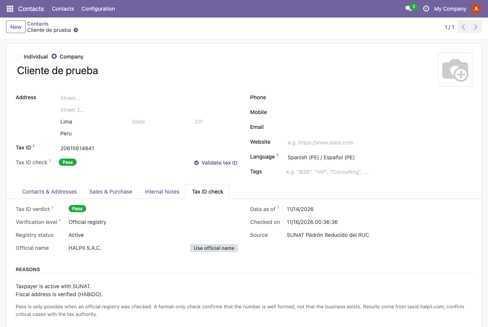
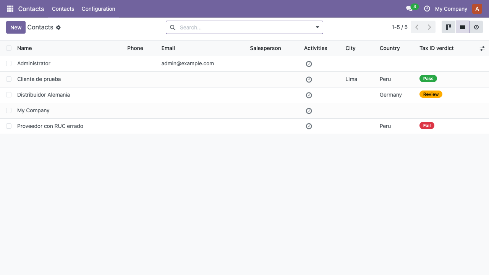
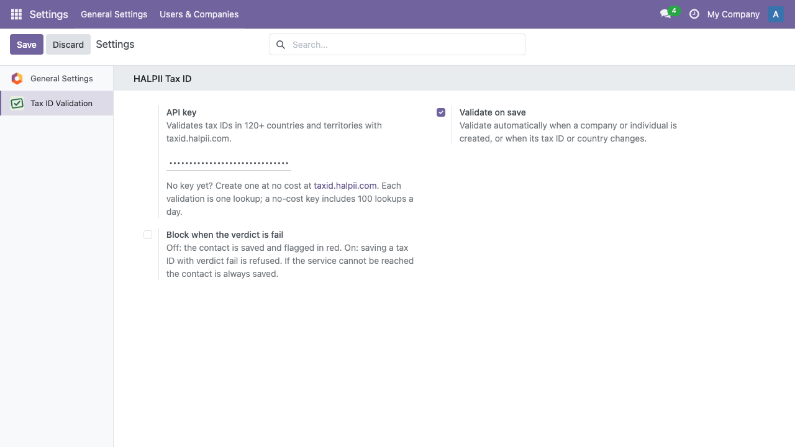

| Level | Where (today) | What it confirms |
|---|---|---|
| Official registry | Peru (SUNAT), Colombia (RUES), Costa Rica (Hacienda, beta), Dominican Republic (DGII), Chile (SII, legal entities), Canada (federal corporations), Norway, Switzerland, Taiwan, Singapore, Israel and the EU member states (VAT numbers through VIES) | The number exists in the registry or its published copy, its status and, where published, the official name. For EU VAT numbers, VIES confirms that the number is registered for intra-EU transactions, not the trade-register status. The only level that can return pass. |
| Format + official lists | Mexico | RFC structure and check digit, plus the SAT public lists (69 and 69-B). Mexico has no public RFC registry, so never pass. |
| Format only | Most other countries and territories: United Kingdom, Brazil, Argentina, India, Japan, US EIN and more, plus some ID types of the countries above (e.g. Spanish NIF, Irish VAT) | Structure and check digit, offline. It does not show that the business exists: the verdict is review or fail, never pass, with a link to the official lookup when the country has one. |
The level is stored on every check. Countries, ID types and the level of each one: taxid.halpii.com/countries. The module reads this list from the API once a day, so countries added later work without updating the module.


requests, which ships with Odoo).The module has no licence fee (LGPL-3). Lookups are counted by the HALPII Tax ID API: a no-cost key includes 100 lookups a month; for higher volumes the API has a monthly plan of US$39 a month with 1,000 lookups included and US$0.03 per extra lookup. Current terms: taxid.halpii.com/pricing.
If the key is rejected (401) or the lookup limit is reached (429), the module says so and stops a bulk run. If an official source is down (503), the contact keeps its previous result and you can retry later; such lookups are not charged. A failing service never prevents saving a contact.
Languages: the module is in English and Spanish. The reasons and the registry status are written by the API and arrive in English.
Privacy: only the country code and the tax ID are sent, with your key. Names, addresses and other contact data stay in your Odoo.
Results come from public sources and can lag behind the registry (see Data as of). Informational only; not legal or tax advice. Not affiliated with any tax administration. Support: contacto@halpii.com